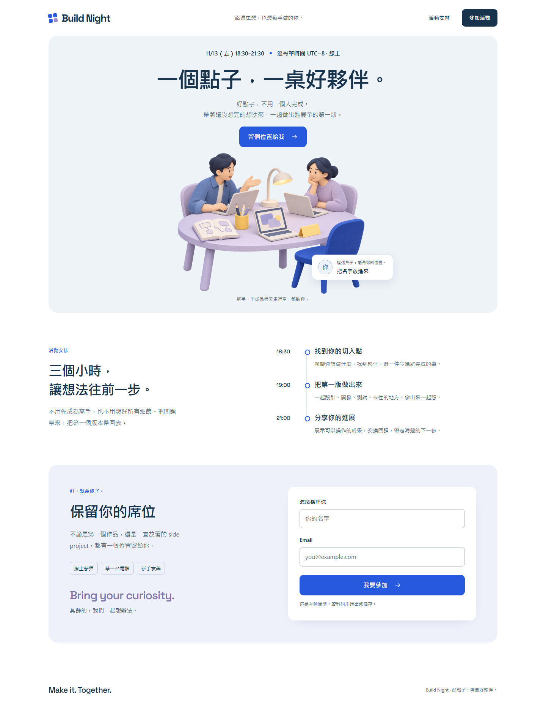
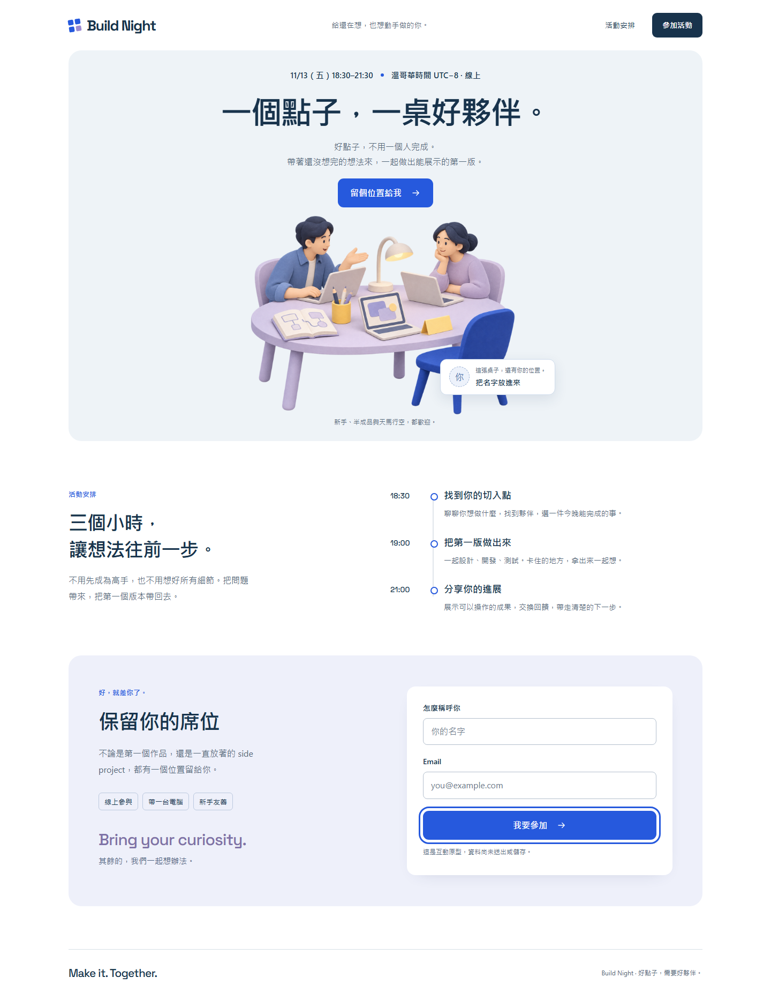
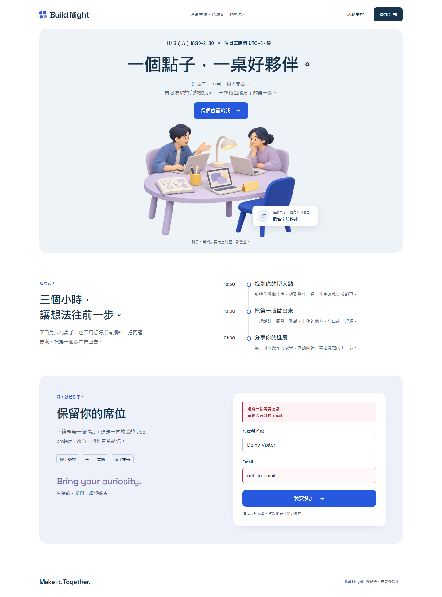
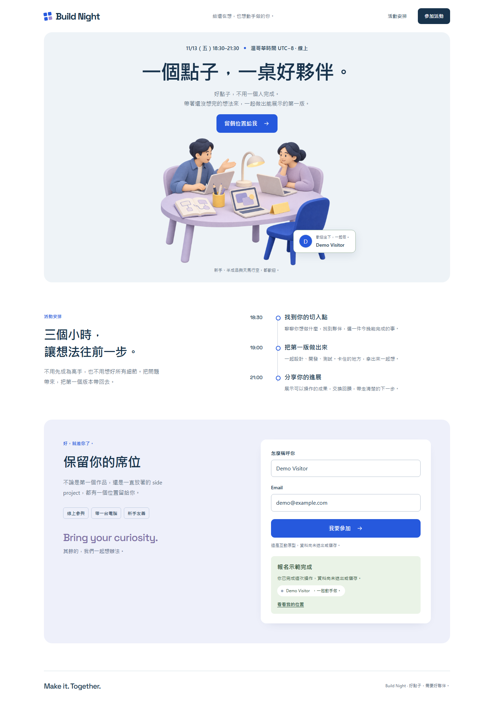
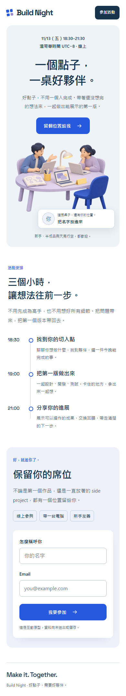
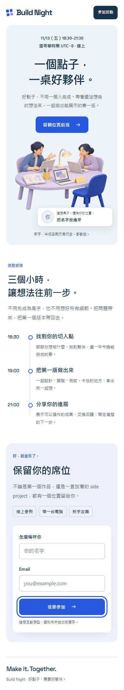
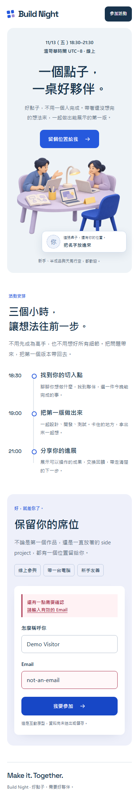
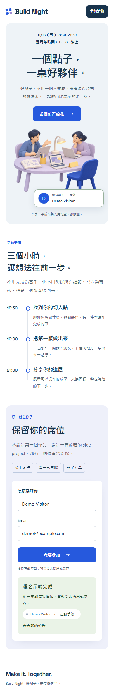

Design Harness · PASS
Visual review: PENDING · http://127.0.0.1:4173
完整 JSON · 視覺審查表 · 摘要
# 2026-11-06T05-41-01-186Z-25460
URL: http://127.0.0.1:4173
Automated checks: **PASS**
Visual review: **PENDING** — open screenshots and complete review.md.
All configured automatic checks passed.
desktop · 1440 × 900
- PASS page-load
HTTP 200
- PASS text: Build Night
- PASS text: 活動安排
- PASS text: 保留你的席位
- PASS screenshot
desktop.png
- PASS layout: initial
{"width":1440,"scroll":1440,"offenders":[]} - PASS accessibility: initial
0 violations total; no serious/critical blockers. Review incomplete results manually.
- PASS flow: keyboard-navigation
5 steps completed
- PASS screenshot-flow-1
desktop-flow-1.png
- PASS flow: invalid-email
4 steps completed
- PASS screenshot-flow-2
desktop-flow-2.png
- PASS flow: registration
4 steps completed
- PASS screenshot-flow-3
desktop-flow-3.png
- PASS screenshot-after
desktop-after.png
- PASS layout: after-flows
{"width":1440,"scroll":1440,"offenders":[]} - PASS accessibility: after-flows
0 violations total; no serious/critical blockers. Review incomplete results manually.
- PASS javascript-errors
No pageerror events observed
desktop.png

desktop-flow-1.png

desktop-flow-2.png

desktop-flow-3.png

desktop-after.png

mobile · 390 × 844
- PASS page-load
HTTP 200
- PASS text: Build Night
- PASS text: 活動安排
- PASS text: 保留你的席位
- PASS screenshot
mobile.png
- PASS layout: initial
{"width":390,"scroll":390,"offenders":[]} - PASS accessibility: initial
0 violations total; no serious/critical blockers. Review incomplete results manually.
- PASS flow: keyboard-navigation
5 steps completed
- PASS screenshot-flow-1
mobile-flow-1.png
- PASS flow: invalid-email
4 steps completed
- PASS screenshot-flow-2
mobile-flow-2.png
- PASS flow: registration
4 steps completed
- PASS screenshot-flow-3
mobile-flow-3.png
- PASS screenshot-after
mobile-after.png
- PASS layout: after-flows
{"width":390,"scroll":390,"offenders":[]} - PASS accessibility: after-flows
0 violations total; no serious/critical blockers. Review incomplete results manually.
- PASS javascript-errors
No pageerror events observed
mobile.png

mobile-flow-1.png

mobile-flow-2.png

mobile-flow-3.png

mobile-after.png
